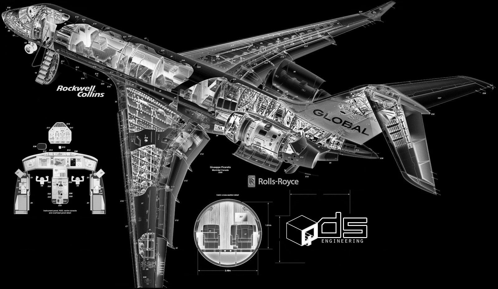
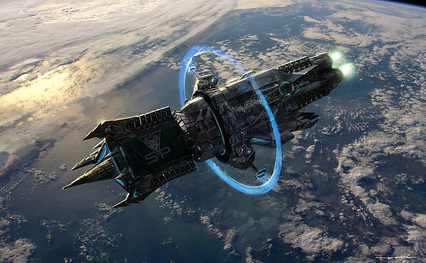
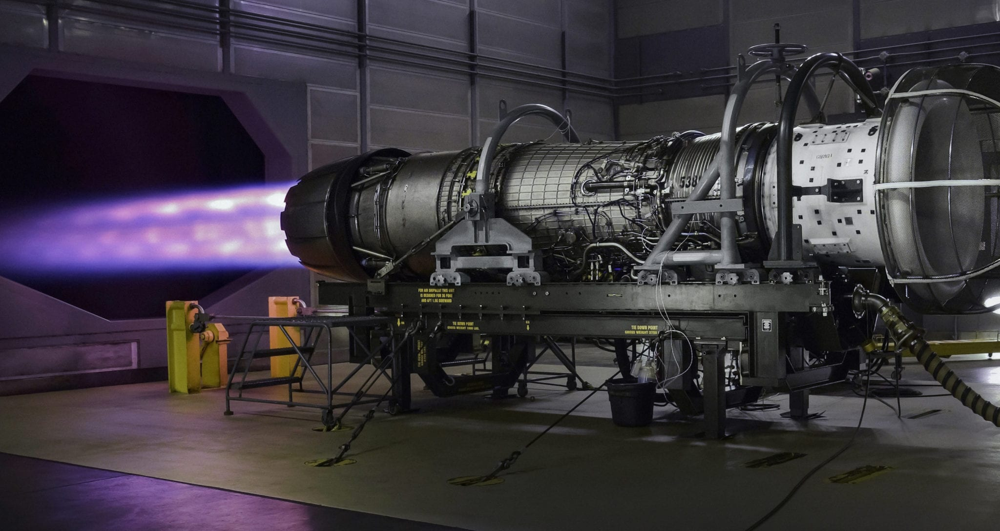

| SL.No | TITTLE |
|---|---|
| WHAT IS AN AEROSPACE ? | |
| WHAT TECHONOLOGY USED ? | |
| OVERVIEW | |
| HISTORY OF AEROSPACE | |
| FUNCTIONAL SAFETYS | |
| MANUFACTURING OF AEROSPACE | |
| SPINOFF TECHONOLOGYS |
Multiple technologies and innovations are used in aerospace, many of them pioneered around World War II:
1.patented by Short Brothers, folding wings optimise aircraft carrier storage from a simple fold to the entire rotating wing of the V-22, and the 12 ft (3.7 m) wingtip fold of the Boeing 777X for airport compatibility.
2.To improve low-speed performance, a de Havilland DH4 was modified by Handley Page to a monoplane with high-lift devices: full-span leading-edge slats and trailing-edge flaps; in 1924, Fowler flaps that extend backward and downward were invented in the US, and used on the Lockheed Model 10 Electra while in 1943 forward-hinged leading-edge Krueger flaps were invented in Germany and later used on the Boeing 707.
3.The 1927 large Propeller Research Tunnel at NACA Langley confirmed that the landing gear was a major source of drag, in 1930 the Boeing Monomail featured a retractable gear.
4.The flush rivet displaced the domed rivet in the 1930s and pneumatic rivet guns work in combination with a heavy reaction bucking bar; not depending on plastic deformation, specialist rivets were developed to improve fatigue life as shear fasteners like the Hi-Lok, threaded pins tightened until a collar breaks off with enough torque.
5.First flown in 1935, the Queen Bee was a radio-controlled target drone derived from the Tiger Moth for Flak training; the Ryan Firebee was a jet-powered target drone developed into long-range reconnaissance UAVs: the Ryan Model 147 Fire Fly and Lightning Bug; the Israeli IAI Scout and Tadiran Mastiff launched a line of battlefield UAVs including the IAI Searcher; developed from the General Atomics Gnat long-endurance UAV for the CIA, the MQ-1 Predator led to the armed MQ-9 Reaper.
6.At the end of World War I, piston engine power could be boosted by compressing intake air with a compressor, also compensating for decreasing air density with altitude, improved with 1930s turbochargers for the Boeing B-17 and the first pressurized airliners.
7.The 1937 Hindenburg disaster ended the era of passenger airships but the US Navy used airships for anti-submarine warfare and airborne early warning into the 1960s, while small airships continue to be used for aerial advertising, sightseeing flights, surveillance and research, and the Airlander 10 or the Lockheed Martin LMH-1 continue to be developed.
8.As US airlines were interested in high-altitude flying in the mid-1930s, the Lockheed XC-35 with a pressurized cabin was tested in 1937 and the Boeing 307 Stratoliner would be the first pressurized airliner to enter commercial service.
9.In 1933, Plexiglas, a transparent Acrylic plastic, was introduced in Germany and shortly before World War II, was first used for aircraft windshields as it is lighter than glass, and the bubble canopy improved fighter pilots visibility.
10.In January 1930, Royal Air Force pilot and engineer Frank Whittle filed a patent for a gas turbine aircraft engine with an inlet, compressor, combustor, turbine and nozzle, while an independent turbojet was developed by researcher Hans von Ohain in Germany; both engines ran within weeks in early 1937 and the Heinkel HeS 3-propelled Heinkel He 178 experimental aircraft made its first flight on Aug 27, 1939 while the Whittle W.1-powered Gloster E.28/39 prototype flew on May 15, 1941.
11.In 1935, Britain demonstrated aircraft radio detection and ranging and in 1940 the RAF introduced the first VHF airborne radars on Bristol Blenheims, then higher-resolution microwave-frequency radar with a cavity magnetron on Bristol Beaufighters in 1941, and in 1959 the radar-homing Hughes AIM-4 Falcon became the first US guided missile on the Convair F-106.
Main articles: History of aviation and Timeline of space exploration.
Modern aerospace began with Engineer George Cayley in 1799. Cayley proposed an aircraft with a "fixed wing and a horizontal and vertical
tail," defining characteristics of the modern airplane.
The 19th century saw the creation of the Aeronautical Society of Great Britain (1866), the American Rocketry Society, and the Institute of
Aeronautical Sciences, all of which made aeronautics a more serious scientific discipline.[3] Airmen like Otto Lilienthal, who introduced
cambered airfoils in 1891, used gliders to analyze aerodynamic forces.[3] The Wright brothers were interested in Lilienthal's work and read
several of his publications.[3] They also found inspiration in Octave Chanute, an airman and the author of Progress in Flying Machines (1894).
It was the preliminary work of Cayley, Lilienthal, Chanute, and other early aerospace engineers that brought about the first powered sustained
flight at Kitty Hawk, North Carolina on December 17, 1903, by the Wright brothers.
War and science fiction inspired scientists and engineers like Konstantin Tsiolkovsky and Wernher von Braun to achieve flight beyond the atmosphere.
World War II inspired Wernher von Braun to create the V1 and V2 rockets.
The launch of Sputnik 1 in October 1957 started the Space Age, and on July 20, 1969 Apollo 11 achieved the first manned moon landing.[3]
In April 1981, the Space Shuttle Columbia launched, the start of regular manned access to orbital space. A sustained human presence in orbital
space started with "Mir" in 1986 and is continued by the "International Space Station".[3] Space commercialization and space tourism are more
recent features of aerospace.

Functional safety relates to a part of the general safety of a system or a piece of equipment. It implies that the system or equipment can be operated
properly and without causing any danger, risk, damage or injury.
Functional safety is crucial in the aerospace industry, which allows no compromises or negligence. In this respect, supervisory bodies, such as the European
Aviation Safety Agency (EASA ),[13] regulate the aerospace market with strict certification standards. This is meant to reach and ensure the highest
possible level of safety. The standards AS 9100 in America, EN 9100 on the European market or JISQ 9100 in Asia particularly address the aerospace and
aviation industry. These are standards applying to the functional safety of aerospace vehicles. Some companies are therefore specialized in the certification,
inspection verification and testing of the vehicles and spare parts to ensure and attest compliance with the appropriate regulations.

Aerospace manufacturing is a high-technology industry that produces "aircraft, guided missiles, space vehicles, aircraft engines,
propulsion units, and related parts".[4] Most of the industry is geared toward governmental work. For each original equipment
manufacturer (OEM), the US government has assigned a Commercial and Government Entity (CAGE) code. These codes help to identify
each manufacturer, repair facilities, and other critical aftermarket vendors in the aerospace industry.
In the United States, the Department of Defense and the National Aeronautics and Space Administration (NASA) are the two largest
consumers of aerospace technology and products. Others include the very large airline industry. The aerospace industry employed
472,000 wage and salary workers in 2006.[5] Most of those jobs were in Washington state and in California, with Missouri, New York
and Texas also being important. The leading aerospace manufacturers in the U.S. are Boeing, United Technologies Corporation, SpaceX,
Northrop Grumman and Lockheed Martin. These manufacturers are facing an increasing labor shortage as skilled U.S. workers age and retire.
Apprenticeship programs such as the Aerospace Joint Apprenticeship Council (AJAC) work in collaboration with Washington state aerospace
employers and community colleges to train new manufacturing employees to keep the industry supplied.
Important locations of the civilian aerospace industry worldwide include Washington state (Boeing), California (Boeing, Lockheed Martin, etc.);
Montreal, Quebec, Canada (Bombardier, Pratt & Whitney Canada); Toulouse, France (Airbus/EADS); Hamburg, Germany (Airbus/EADS); and São José dos
Campos, Brazil (Embraer), Querétaro, Mexico (Bombardier Aerospace, General Electric Aviation) and Mexicali, Mexico (United Technologies
Corporation, Gulfstream Aerospace).
In the European Union, aerospace companies such as EADS, BAE Systems, Thales, Dassault, Saab AB and Leonardo S.p.A. (formerly Finmeccnica)
account for a large share of the global aerospace industry and research effort, with the European Space Agency as one of the largest consumers
of aerospace technology and products.
In India, Bangalore is a major center of the aerospace industry, where Hindustan Aeronautics Limited, the National Aerospace Laboratories and the
Indian Space Research Organisation are headquartered. The Indian Space Research Organisation (ISRO) launched India's first Moon orbiter,
Chandrayaan-1, in October 2008.
In Russia, large aerospace companies like Oboronprom and the United Aircraft Building Corporation (encompassing Mikoyan, Sukhoi, Ilyushin,
Tupolev, Yakovlev, and Irkut which includes Beriev) are among the major global players in this industry. The historic Soviet Union was also
the home of a major aerospace industry.
The United Kingdom formerly attempted to maintain its own large aerospace industry, making its own airliners and warplanes, but it has largely
turned its lot over to cooperative efforts with continental companies, and it has turned into a large import customer, too, from countries such
as the United States. However, the UK has a very active aerospace sector, including the second largest defence contractor in the world, BAE Systems,
supplying fully assembled aircraft, aircraft components, sub-assemblies and sub-systems to other manufacturers, both in Europe and all over the world.
Canada has formerly manufactured some of its own designs for jet warplanes, etc. (e.g. the CF-100 fighter), but for some decades, it has relied on imports
from the United States and Europe to fill these needs. However Canada still manufactures some military aircraft although they are generally not combat
capable. Another notable example was the late 1950s development of the Avro Canada CF-105 Arrow, a supersonic fighter-interceptor whose 1959 cancellation
was considered highly controversial.
France has continued to make its own warplanes for its air force and navy, and Sweden continues to make its own warplanes for the Swedish Air Force—especially
in support of its position as a neutral country. (See Saab AB.) Other European countries either team up in making fighters (such as the Panavia Tornado and the
Eurofighter Typhoon), or else to import them from the United States.
Pakistan has a developing aerospace engineering industry. The National Engineering and Scientific Commission, Khan Research Laboratories and Pakistan Aeronautical
Complex are among the premier organizations involved in research and development in this sector. Pakistan has the capability of designing and manufacturing guided
rockets, missiles and space vehicles. The city of Kamra is home to the Pakistan Aeronautical Complex which contains several factories. This facility is responsible
for manufacturing the MFI-17, MFI-395, K-8 and JF-17 Thunder aircraft. Pakistan also has the capability to design and manufacture both armed and unarmed unmanned
aerial vehicles.
In the People's Republic of China, Beijing, Xi'an, Chengdu, Shanghai, Shenyang and Nanchang are major research and manufacture centers of the aerospace industry.
China has developed an extensive capability to design, test and produce military aircraft, missiles and space vehicles. Despite the cancellation in 1983 of the
experimental Shanghai Y-10, China is still developing its civil aerospace industry.
The aircraft parts industry was born out of the sale of second-hand or used aircraft parts from the aerospace manufacture sector. Within the United States there
is a specific process that parts brokers or resellers must follow. This includes leveraging a certified repair station to overhaul and "tag" a part. This
certification guarantees that a part was repaired or overhauled to meet OEM specifications. Once a part is overhauled its value is determined from the supply
and demand of the aerospace market. When an airline has an aircraft on the ground, the part that the airline requires to get the plane back into service becomes
invaluable. This can drive the market for specific parts. There are several online marketplaces that assist with the commodity selling of aircraft parts.
In the aerospace and defense industry, much consolidation has occurred at the end of the 20th century, going into the 21st century. Between 1988 and 2011,
more than 6,068 mergers & acquisitions with a total known value of US$678 billion have been announced worldwide.

Spinoffs refer to any technology that is a direct result of coding or products created by NASA and redesigned for an alternate purpose.
These technological advancements are one of the primary results of the aerospace industry, with $5.2 billion worth of revenue generated
by spinoff technology, including computers and cellular devices. These spinoffs have applications in a variety of different fields
including medicine, transportation, energy, consumer goods, public safety and more. NASA publishes an annual report called "Spinoffs",
regarding many of the specific products and benefits to the aforementioned areas in an effort to highlight some of the ways funding is put
to use. For example, in the most recent edition of this publication, "Spinoffs 2015", endoscopes are featured as one of the medical derivations
of aerospace achievement.This device enables more precise and subsequently cost-effective neurosurgery by reducing complications through
a minimally invasive procedure that abbreviates hospitalization. "These NASA technologies are not only giving companies and entrepreneurs
a competitive edge in their own industries, but are also helping to shape budding industries, such as commercial lunar landers," said Daniel Lockney.

*WE HAVE REFFERED FROM SO MANY BOOKS,OTHERWEBSITES,etc... TO MAKE A CONCLUSION.
*WE USED MANY HTML TAGS FOR MAKING THIS WEBSITE.
*WE ALSO USED TEXT TAGS,FORM TAGS,LIST TAGS,TABLE TAGS.

*WE ARE STUDENTS OF ONGC PUBLIC SCHOOL . STUDYING IN CLASS 11 (COMPUTER SCIENCE GROUP).
WE CAME HERE TO SHOW HOW TO CREATE A SCIENTIFIC WEBSITE USING HTML ..
D.TEAM MEMBERS LIST: